Streifen, Flecken und Korallen.
Zieh eine Linie und sieh zu, wie Zebrastreifen, Leopardenflecken oder verzweigte Korallen aus der Reaktions-Diffusions-Mathematik wachsen, die Alan Turing 1952 vorschlug.
GENERATIVE KUNST · IPHONE & APPLE WATCH
Du malst keine Pixel. Du stupst ein lebendes System an, und es lässt das Bild für dich wachsen: Streifen aus Turings Chemie, Starenschwärme, Schleimpilz-Netze und die schimmernde Haut einer Sepia.
Jetzt im App Store erhältlich
SechsLebende Systeme
Keine DatenWerden erhoben
EinmalkaufKein Abo
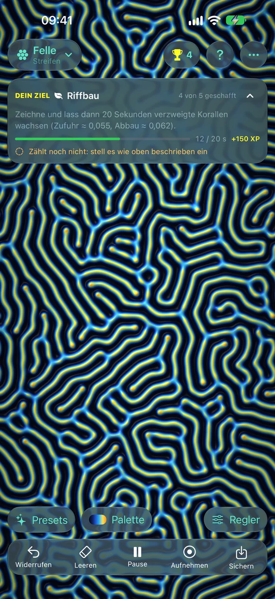
SECHS LEBENDE SYSTEME
Zieh eine Linie und sieh zu, wie Zebrastreifen, Leopardenflecken oder verzweigte Korallen aus der Reaktions-Diffusions-Mathematik wachsen, die Alan Turing 1952 vorschlug.
Jeder Vogel folgt drei einfachen Regeln, einen Anführer gibt es nicht. Zeichne einen Pfad, um den Schwarm zu lenken, oder halte gedrückt und werde zum Falken.
Tausende Pigmentzellen öffnen und schließen sich wie die Chromatophoren einer Sepia. Tippen sendet eine Welle, Ziehen malt, Halten löst ein Warnsignal aus.
150.000 virtuelle Zellen legen Spuren und folgen ihnen. Leg Haferflocken aus, und der Schleimpilz verbindet sie zu einem effizienten Netz; streu Salz, und er weicht aus.
Hunderte Glühwürmchen stellen ihre Uhren aufeinander ein, bis die ganze Wiese gemeinsam blinkt. Blink mit der Laterne, werde zum Taktgeber, lass Wind durchs Gras wehen.
Samen werden in einem Drehwinkel gesetzt, und nur 137,5° füllt die Blüte perfekt. Stell ihn auf Tausendstel Grad genau ein und sieh die Fibonacci-Spiralen erscheinen.
LERNEN BEIM SPIELEN
Jeder Modus hat eine kurze „Warum?“-Karte in einfacher Sprache, einen Deep Dive und ein Quiz. Die Biologie stammt aus begutachteter Forschung, nicht aus Vermutungen.
GENAUER HINGESCHAUT
Echte App-Store-Screenshots, von den sechs lebenden Systemen bis zu Zielen, Quiz und Spielmodi.
Seitlich scrollen für alle zehn Screenshots.
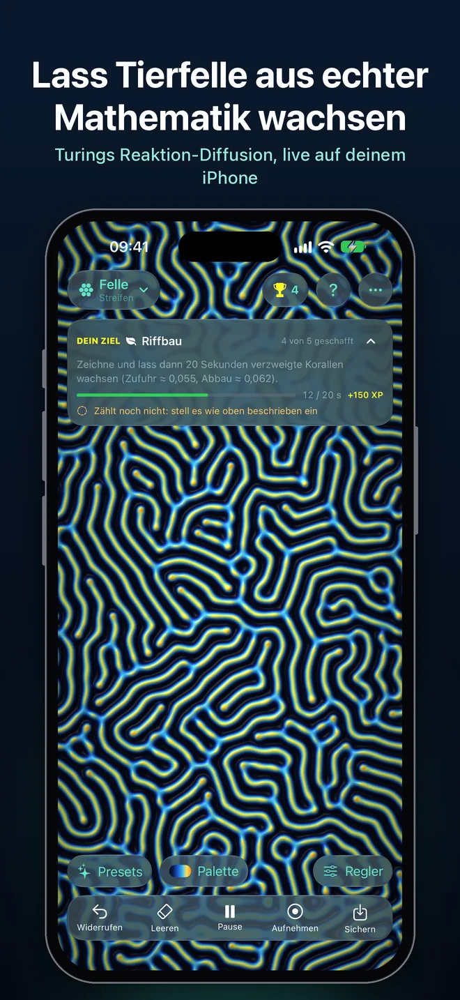
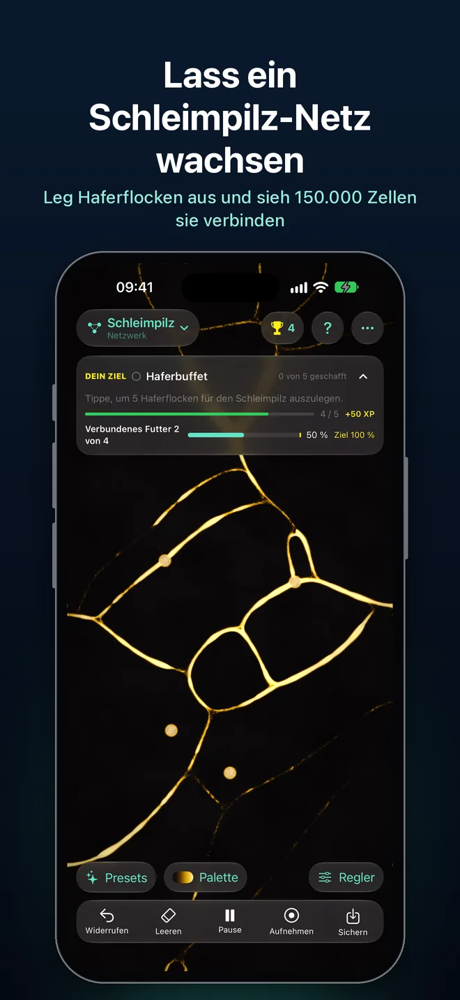
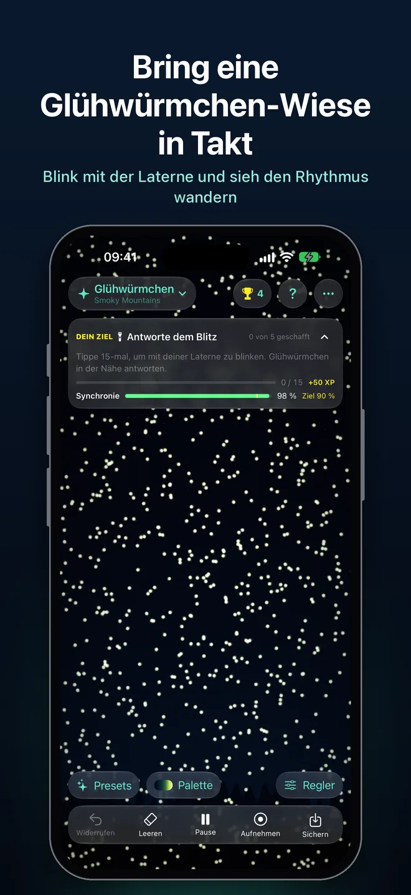
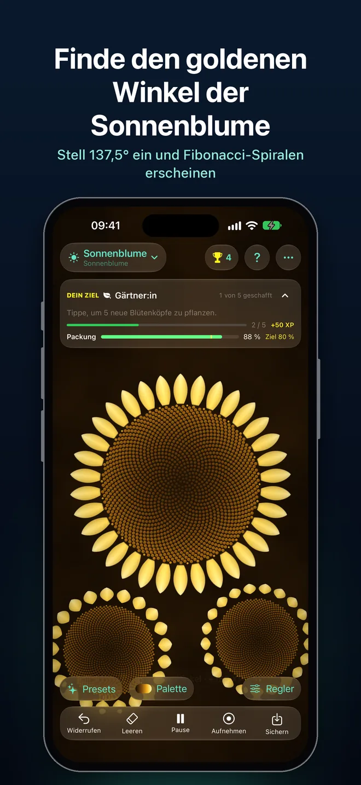
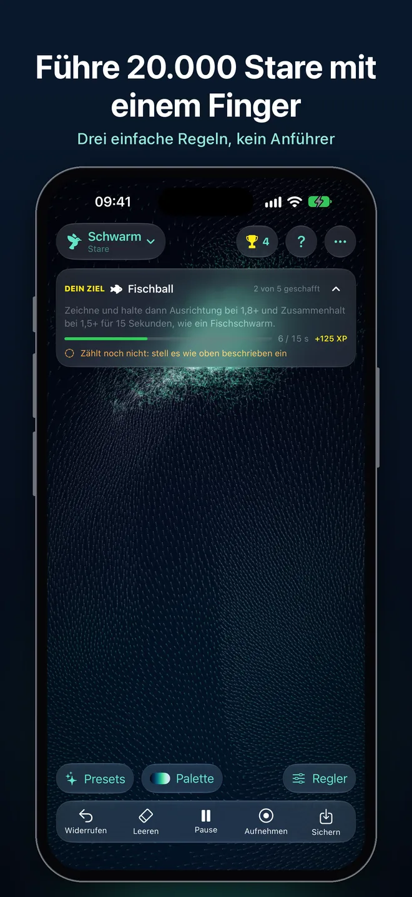
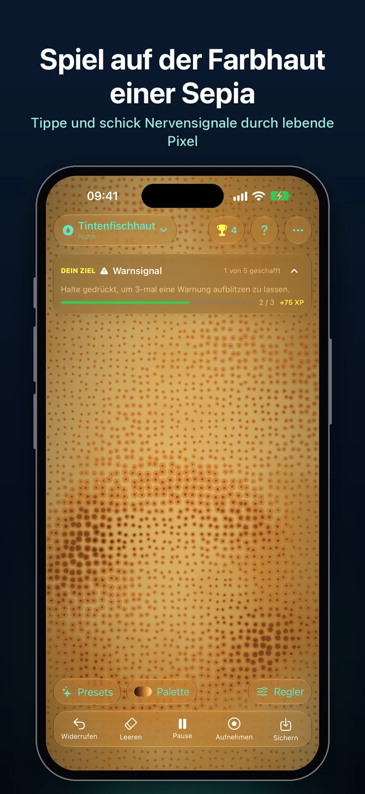
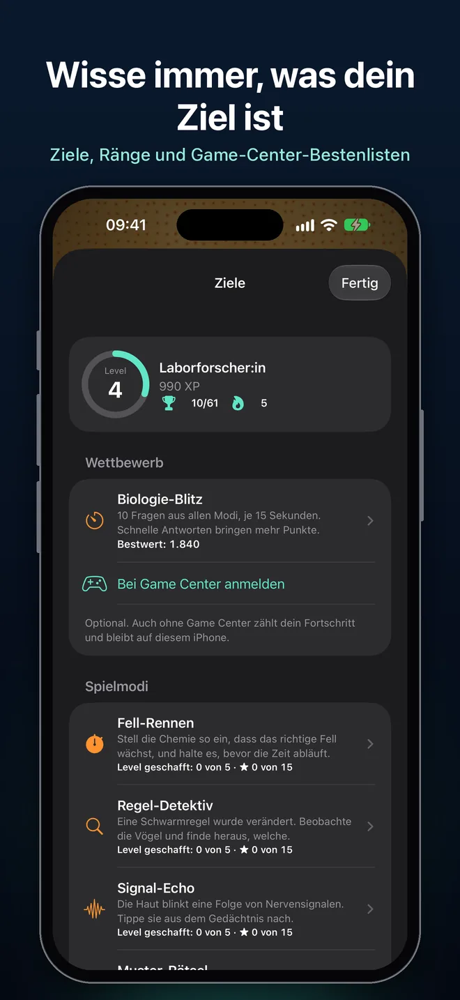
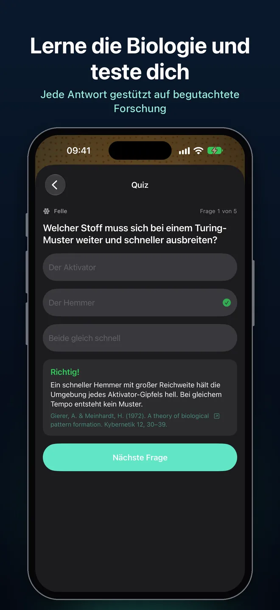
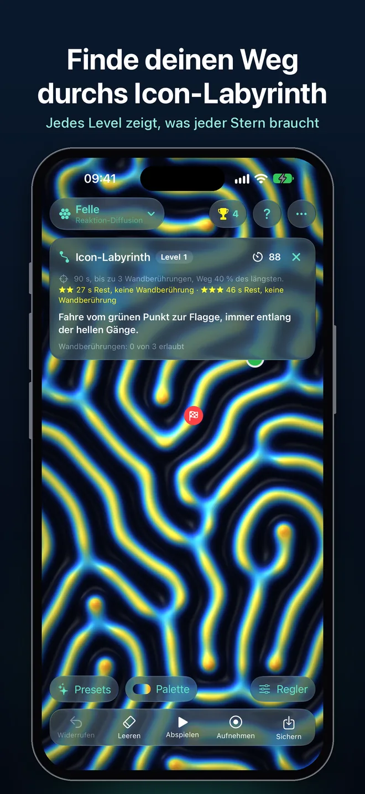
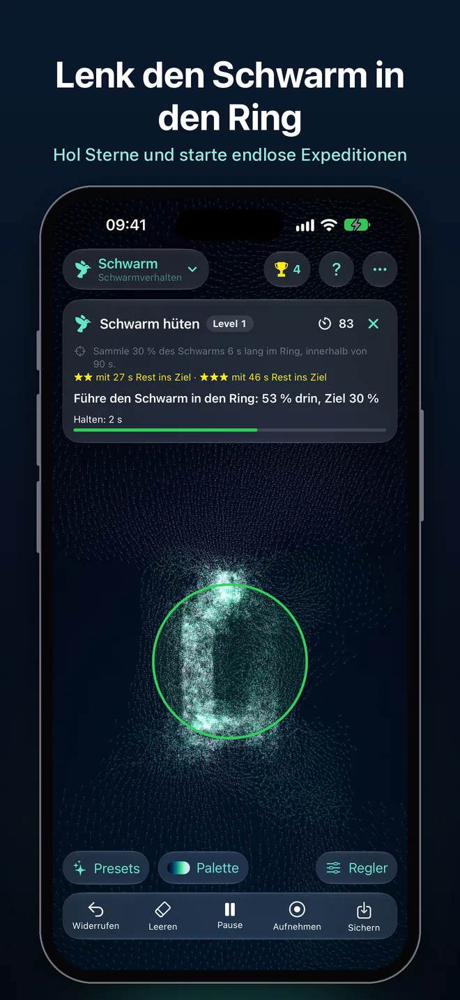
KOSTENLOS TESTEN. EINMAL KAUFEN.
Lade Morphia kostenlos und spiel jedes lebende System, zeichne, bewege jeden Regler und lies jede Warum?-Karte. Schalte Studio frei, wenn du alle kreativen Werkzeuge willst.
9,99 € Einmalkauf in Deutschland
Optionaler In-App-Kauf. Preise können je nach Land abweichen. Kein Abo, nichts verlängert sich. Familienfreigabe wird unterstützt.
Immer kostenlos: jedes lebende System, Zeichnen, alle Regler und jede Warum?-Karte.
Zur App-DokumentationPRIVAT VON ANFANG AN
Morphia erhebt keine Daten. Kein Konto, keine Werbung, kein Tracking. Deine Galerie und dein Fortschritt bleiben auf deinem Gerät.
Käufe laufen über Apples App Store. Game Center ist optional und nutzt Apples Dienst, wenn du dich anmeldest.
Zur DatenschutzerklärungJa. Die Apple-Watch-App bringt die lebenden Systeme an dein Handgelenk, darunter Fell, Schwarm, Tintenfisch, Schleimpilz, Glühwürmchen und Sonnenblume.
Ja. Jeder Modus beruht auf veröffentlichten Modellen, etwa Turings Reaktion-Diffusion und den drei Schwarmregeln. Warum?-Karten, Deep Dives und Quiz nennen begutachtete Forschung als Quelle.
Morphia berücksichtigt „Bewegung reduzieren“ und bietet zusätzlich „Blinken reduzieren“. Glühwürmchen blinken höchstens 2,5-mal pro Sekunde, Warnsignale der Sepia bleiben unter drei pro Sekunde.
Nein. Ziele, Level, Sterne und Ränge funktionieren auch ohne. Melde dich nur an, wenn du Erfolge und Bestenlisten möchtest.
Jetzt. Morphia: Lebende Kunst gibt es im App Store für das iPhone, mit einer passenden App für die Apple Watch.
Jetzt erhältlich für iPhone und Apple Watch.